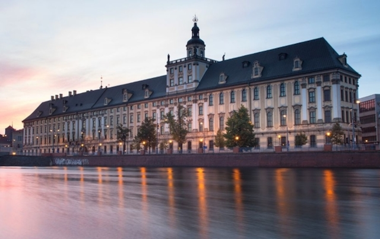
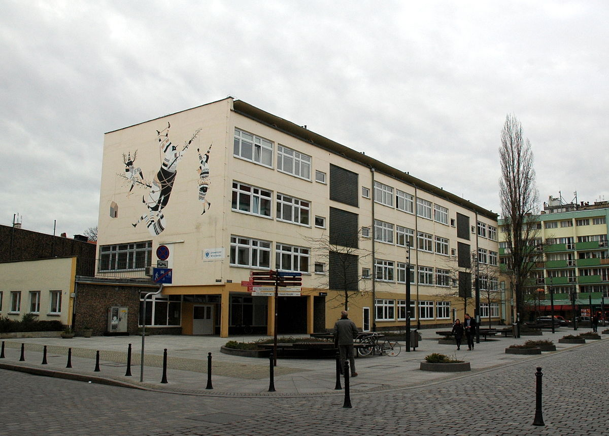
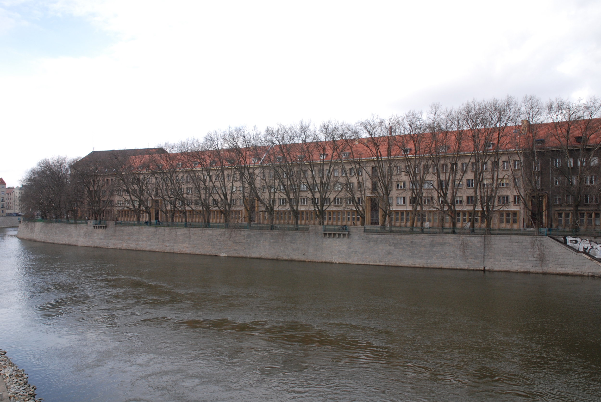
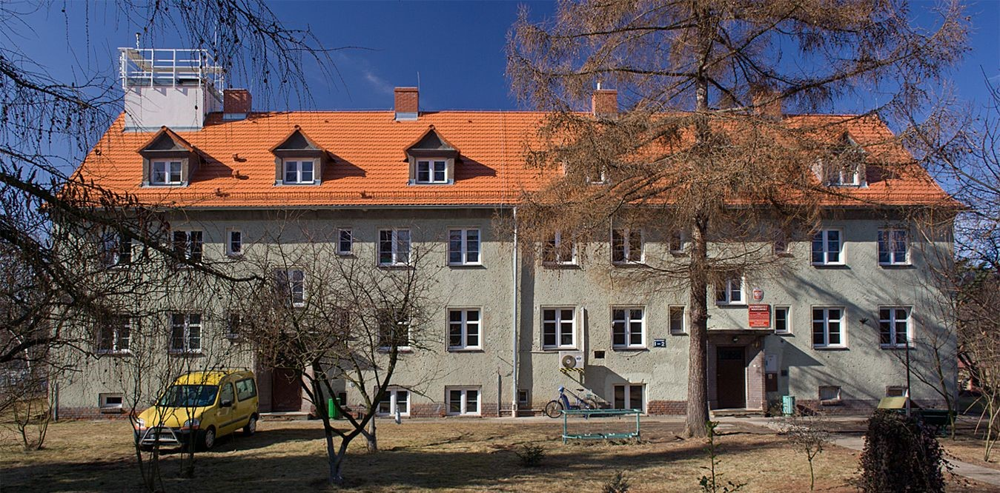
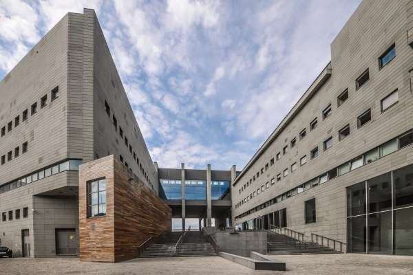
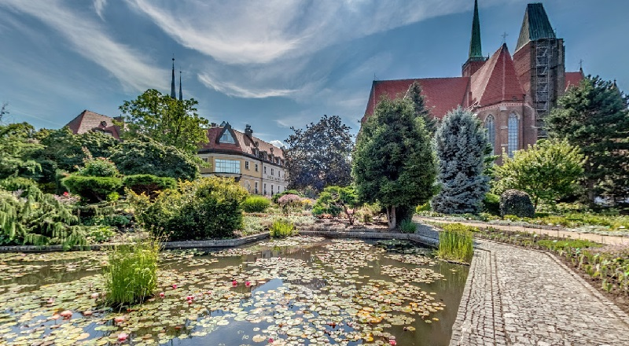
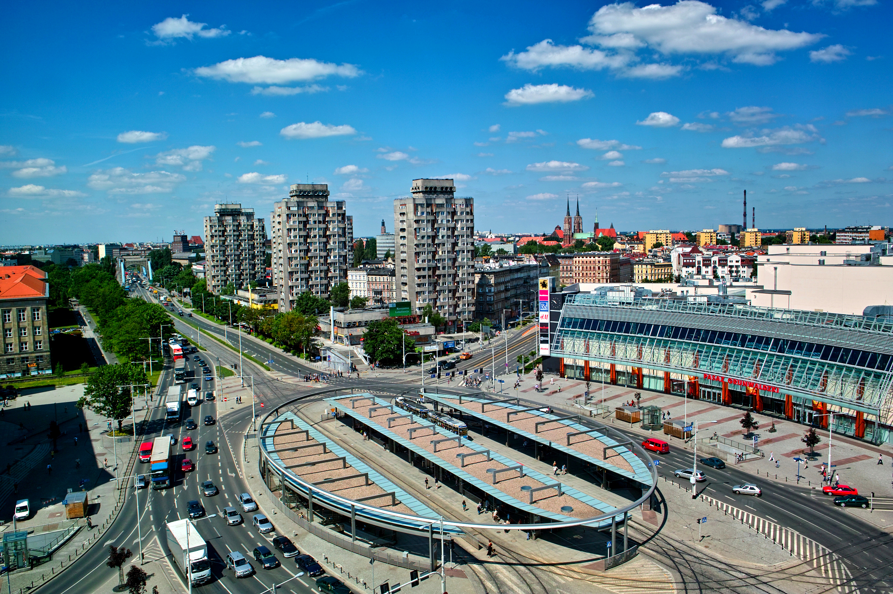
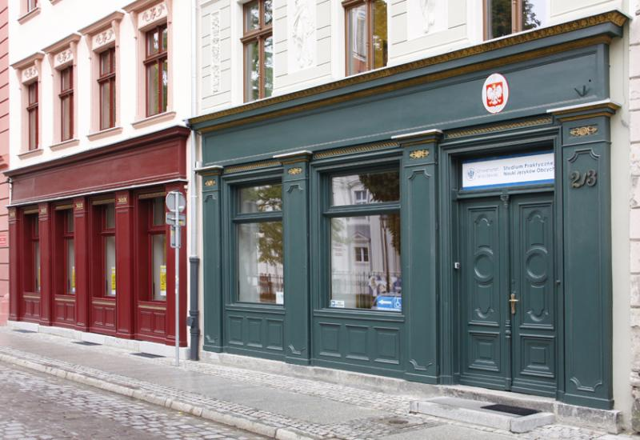
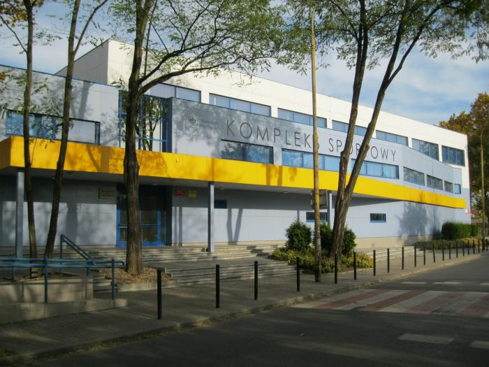

<!doctype HTML>
<html lang="pl">
<head>
	<title>UWR - mapa</title>
	<link rel="icon" type="image/png" href="UWr-logo.png"/>
	<meta name="viewport" content="width=device-width, initial-scale=1.0">
	<meta charset="utf-8">
	<link rel="stylesheet" href="leaflet.css"/>
	<link rel="stylesheet" href="L.Control.Locate.min.css"/>
	<link rel='stylesheet' href='leaflet.fullscreen.css'/>
	<link rel="stylesheet" href="styles.css"/>
	<script src="leaflet.js"></script>
	<script src="L.Control.Locate.js" ></script>
	<script src='Leaflet.fullscreen.min.js'></script>
</head>
<body>
	<div id="map"></div>
	<script>
		var map = L.map('map').setView([51.112, 17.05], 15);
		
		var tiles = L.tileLayer('https://{s}.tile.openstreetmap.org/{z}/{x}/{y}.png', {
		attribution: 'Maksymilian Maroszek &copy; <a href="https://www.openstreetmap.org/copyright">OpenStreetMap</a>',
		minZoom: 10
		}).addTo(map);

		L.control.locate({
		strings: {
			title: "Pokaż moją lokalizację",
			metersUnit: "metrów",
			popup: "<div class='locate_text'>Znajdujesz się {distance} {unit} od tego punktu<br>Twoje współrzędne to: {user_lat}, {user_lon}</div>",
			outsideMapBoundsMsg: "Znajdujesz się poza granicami mapy"
		}
		}).addTo(map);
		
		map.addControl(new L.Control.Fullscreen({
		title: {
			'false': 'Włącz tryb pełnego ekranu',
			'true': 'Opuść tryb pełnego ekranu'
		}
		}));
		
		var uwr_1 = L.marker([51.1139734, 17.0340136]).bindPopup('<h3>Gmach Główny UWr<br>Instytut Geografii i Rozwoju Regionalnego</h3><h4>pl. Uniwersytecki 1</h4>Lista sal:<ul class="s_list"><li>II piętro: 223</li><li>III piętro: 309, 311, 315, 320, 325, 328, 332, 336</li></ul><a class="navbutton" href="https://www.google.com/maps/dir//51.1139734,17.0340136">Nawiguj</a>'),
		    uwr_2 = L.marker([51.1119840, 17.0337709]).bindPopup('<h3>Instytut Geografii i Rozwoju Regionalnego</h3><h4>ul. Kuźnicza 49/55</h4>Lista sal:<ul class="s_list"><li>II piętro: 220, 229</li><li>III piętro: 321, 326, 327</li></ul><a class="navbutton" href="https://www.google.com/maps/dir//51.1119840,17.0337709">Nawiguj</a>'),
			uwr_3 = L.marker([51.1161755, 17.0294180]).bindPopup('<h3>Instytut Nauk Geologicznych<br>Dziekanat</h3><h4>ul. Cybulskiego 32/34</h4>Lista sal:<ul class="s_list"><li>Cybulskiego 32: 151, 153</li><li>Cybulskiego 34: 182</li></ul><a class="navbutton" href="https://www.google.com/maps/dir//51.1161755,17.0294180">Nawiguj</a>'),
			uwr_4 = L.marker([51.1052779, 17.0893290]).bindPopup('<h3>Zakład Klimatologii i Ochrony Atmosfery</h3><h4>ul. Kosiby 6/8</h4>Lista sal:<ul class="s_list"><li>I piętro: 12, 13, 20</li></ul><a class="navbutton" href="https://www.google.com/maps/dir//51.1052779,17.0893290">Nawiguj</a>');
			
		var fav_1 = L.marker([51.1121225, 17.0503717]).bindPopup('<h3>Biblioteka Uniwersytecka</h3><h4>ul. Joliot-Curie 12</h4><a class="navbutton" href="https://www.google.com/maps/dir//51.1121225,17.0503717">Nawiguj</a>'),
			fav_2 = L.marker([51.1157743, 17.0482707]).bindPopup('<h3>Ogród Botaniczny UWr</h3><h4>ul. Sienkiewicza 23</h4>Darmowy wstęp dla studentów uniwersytetu<a class="navbutton" href="https://www.google.com/maps/dir//51.1157743,17.0482707">Nawiguj</a>'),
			fav_3 = L.marker([51.1115454, 17.0602101]).bindPopup('<h3>Plac Grunwaldzki</h3><ul class="s_list"><li>Węzeł przesiadkowy komunikacji miejskiej</li><li>Gastronomia</li><li>Sklepy</li></ul><a class="navbutton" href="https://www.google.com/maps/dir//51.1115454,17.0602101">Nawiguj</a>'),
			fav_4 = L.marker([51.1125617, 17.0366598]).bindPopup('<h3>Studium Praktycznej Nauki Języków Obcych</h3><h4>pl. Nankiera 2/3</h4><a class="navbutton" href="https://www.google.com/maps/dir//51.1125617,17.0366598">Nawiguj</a>'),
			fav_5 = L.marker([51.1382169, 17.0624327]).bindPopup('<h3>Hala sportowa UWr</h3><h4>ul. Przesmyckiego 10</h4><a class="navbutton" href="https://www.google.com/maps/dir//51.1382169,17.0624327">Nawiguj</a>');
		
		var uwr_bud = L.layerGroup([uwr_1,uwr_2,uwr_3,uwr_4]).addTo(map);
		var fav_places = L.layerGroup([fav_1,fav_2,fav_3,fav_4,fav_5]).addTo(map);
			
		var warstwy = {
			"Budynki dydaktyczne": uwr_bud,
			"Inne ważne miejsca": fav_places
		};
		
		L.control.scale({position: 'bottomright'}).addTo(map);
		L.control.layers(null,warstwy).addTo(map);
	</script>
</body>
</html>